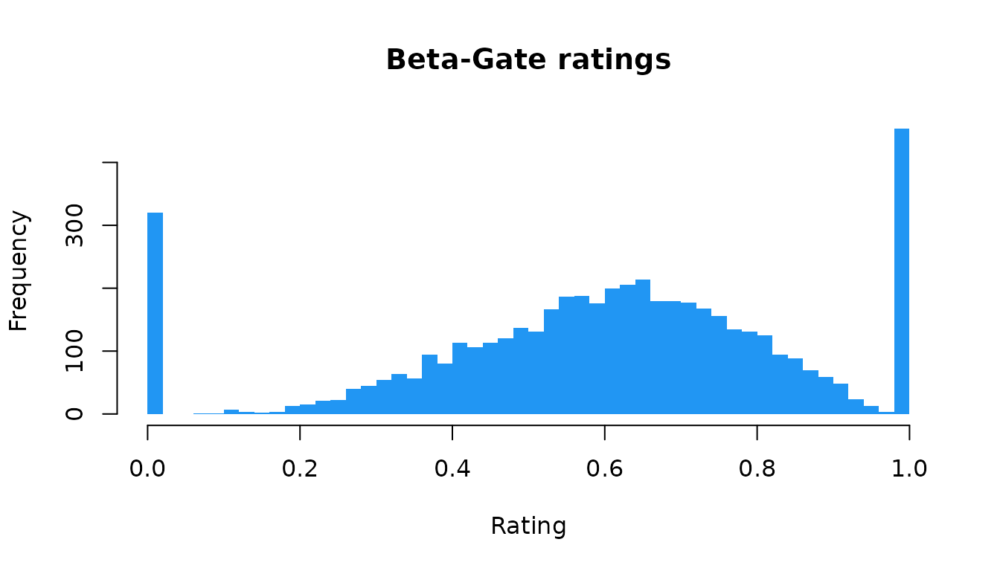

cogmod provides cognitive models for two broad families of behavioural data: subjective ratings collected on Likert or analog scales, and decision making tasks that yield reaction times and choices.
Each model comes in two halves. The first is a set of plain R
functions - r*() to simulate, d*() for the
density, useful on their own for simulation, predictions, visualization,
and teaching.
library(cogmod)
set.seed(3)
x <- rcogmod_betagate(5000, mu = 0.6, phi = 4, pex = 0.15, bex = 0.4)
hist(x, breaks = 50, col = "#2196F3", border = NA,
main = "Beta-Gate ratings", xlab = "Rating")
The second half is the machinery needed to fit the model as
a custom response distribution in brms: a
family constructor, the Stan code implementing its log-density, and the
log_lik/posterior_predict/posterior_epred
methods that make loo, pp_check() and the
easystats post-processing functions work as they
normally would. Fitting requires a Stan backend (cmdstanr is
recommended).
library(brms)
f <- bf(rating ~ condition + (1 | participant), phi ~ 1, pex ~ 1, bex ~ 1,
family = cogmod_betagate())
m <- brm(
f,
data = df,
stanvars = cogmod_stanvars(f),
backend = "cmdstanr"
)The pattern is the same for every model: name the family in
bf(), then let cogmod_stanvars() supply the
Stan code that goes with it. Two companions follow the same shape -
cogmod_priors(f, df) for the priors brms would
otherwise leave flat, and cogmod_inits(f, df) for starting
values on the families whose default start is a bad one.
Where to go next
The function reference lists every model with its parameterisation. Worked, end-to-end analyses live on the package website, where they can be built with fitted models that would be too slow to include here:
- Subjective Ratings - Beta-Gate and CHOCO on rating data, compared against ZOIB and ordinal alternatives.
- How to Properly Analyze Reaction Times Data - why linear models on mean RT mislead, and how the RT-only families compare.
- Decision Making Models - fitting and comparing DDM, LBA, RDM and LNR on choice-RT data.
- Assessing Reliability - interindividual variability and reliability of model parameters.
Citation
citation("cogmod")
#> To cite cogmod in publications use:
#>
#> Makowski, D. (2026). cogmod: Cognitive Models for Subjective Scales
#> and Decision Making Tasks. R package version 0.3.0.
#> https://github.com/DominiqueMakowski/cogmod
#>
#> A BibTeX entry for LaTeX users is
#>
#> @Manual{makowski2026cogmod,
#> title = {{cogmod}: Cognitive Models for Subjective Scales and Decision Making Tasks},
#> author = {Dominique Makowski},
#> year = {2026},
#> note = {R package version 0.3.0},
#> url = {https://github.com/DominiqueMakowski/cogmod},
#> }